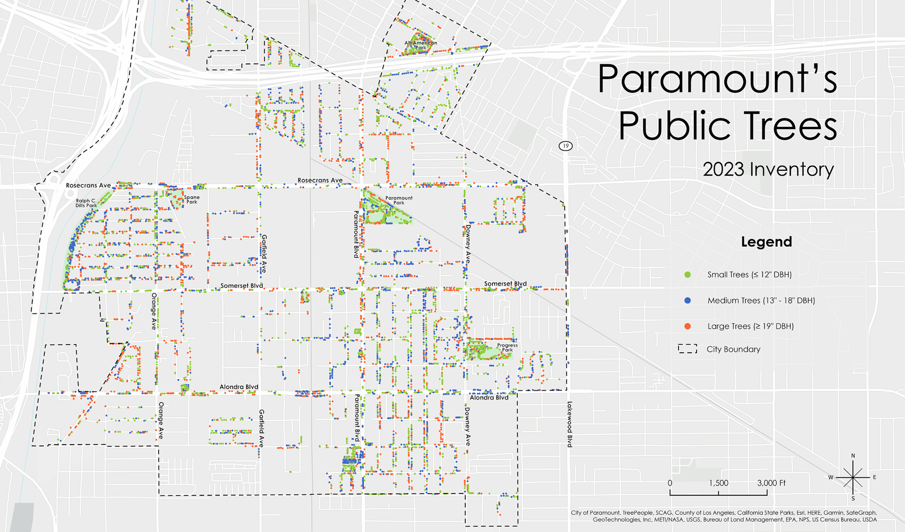
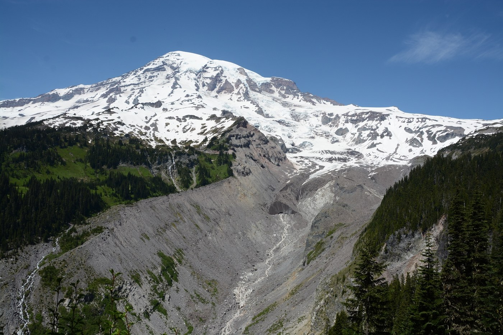

Projects
Maps, analyses, and research
Tree Canopy Cover in Los Angeles
As part of my team's project at NASA DEVELOP, I focused on creating a supervised classification model to calculate tree canopy cover using remote sensing. We used 0.5 m aerial imagery across four years to detect change in tree canopy cover for urban areas in Los Angeles County. We partnered with the City of Los Angeles, Office of City Forest Management and City Plants — the inset map highlights a 2016 tree planting initiative along Vermont Avenue.

Urban Forest Management Plans
During my time at TreePeople, I had the opportunity to create Urban Forest Management Plans for the City of Paramount, San Fernando, and Huntington Park in Southern California. As the principal mapmaker and data analyst, I played a pivotal role in shaping these plans, meticulously crafting all the maps and charts that adorned the final reports.

Dynamic Ice-Water Boundaries of the Greenland Ice Sheet
I produced a visually engaging cartographic representation of my research findings that effectively illustrates the dynamic spatial and temporal changes in the interaction between the Greenland Ice Sheet and water. Published in the Journal of Glaciology (Cambridge University Press), this research project utilized over 20 years of Landsat imagery to train a custom land-type classification model, which I designed using machine learning in Python and JavaScript.
Stream Discharge Prediction
A team coding project using Python and GitHub to analyze discharge levels of the Nisqually River in Washington. We set out to understand what the most influential climate factors are for determining discharge levels in the study region, applying machine learning models to USGS gage data.

Lighthouses of Great Britain
An interactive web map built with Mapbox GL JS to display all locations of lighthouses in Great Britain, including relevant information and statistics along with an image of each lighthouse. The project involved publishing a web map on a live server.

Chemical Uncertainty: Regulating PFAS in Our Nation's Waterbodies
A research paper that analyzes the current regulating policies around per- and polyfluoroalkyl substances (PFAS) and suggests strengthening regulating measures of the chemicals at the federal level.